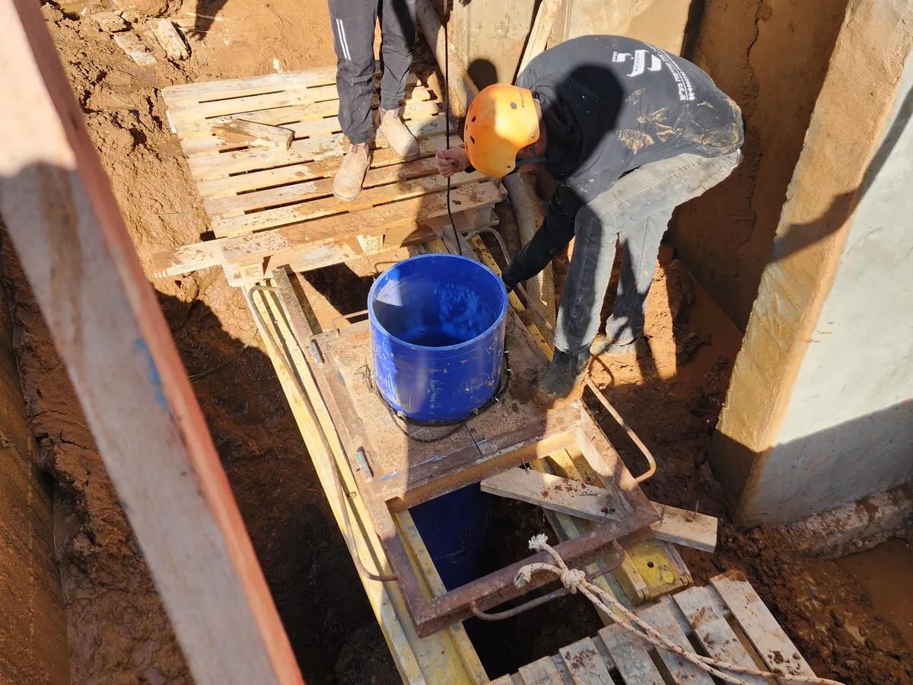
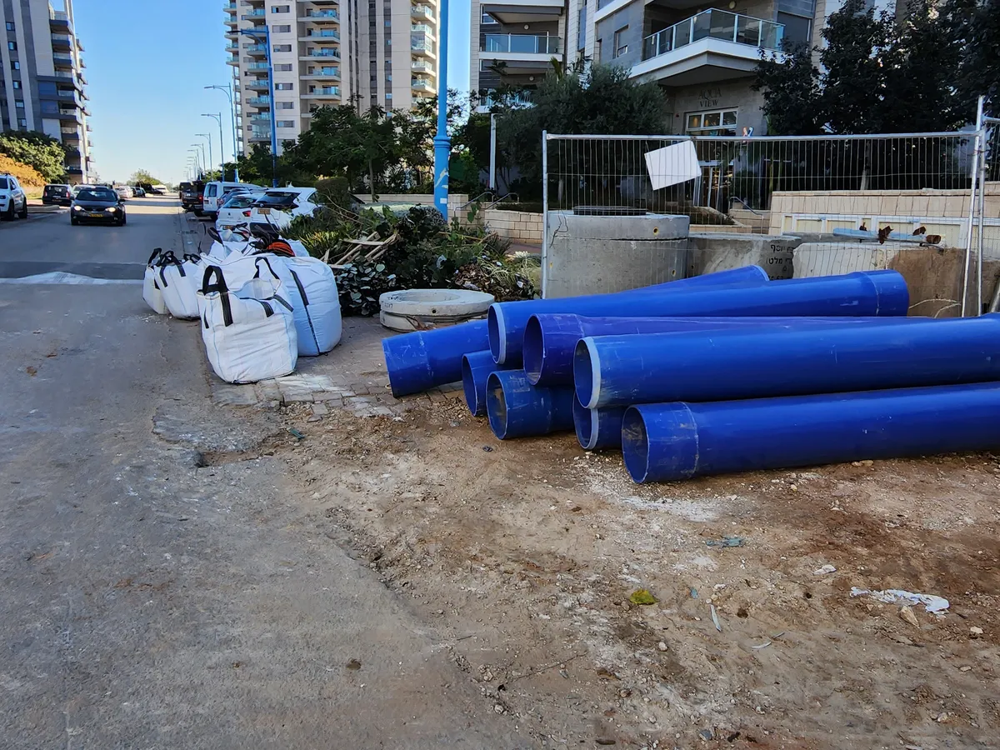
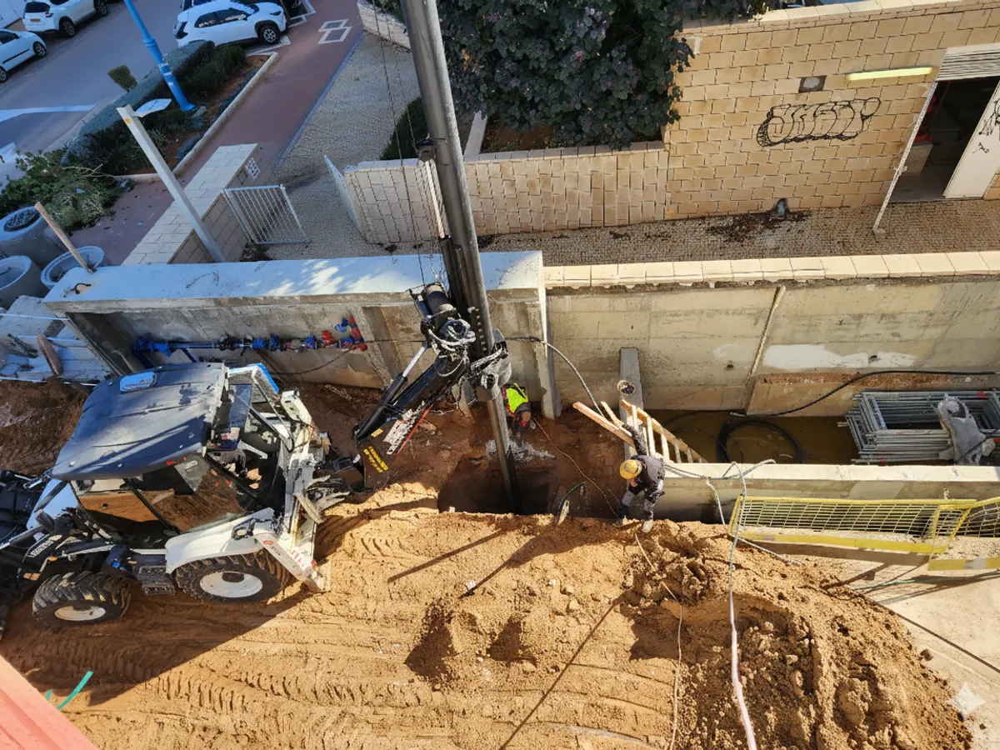
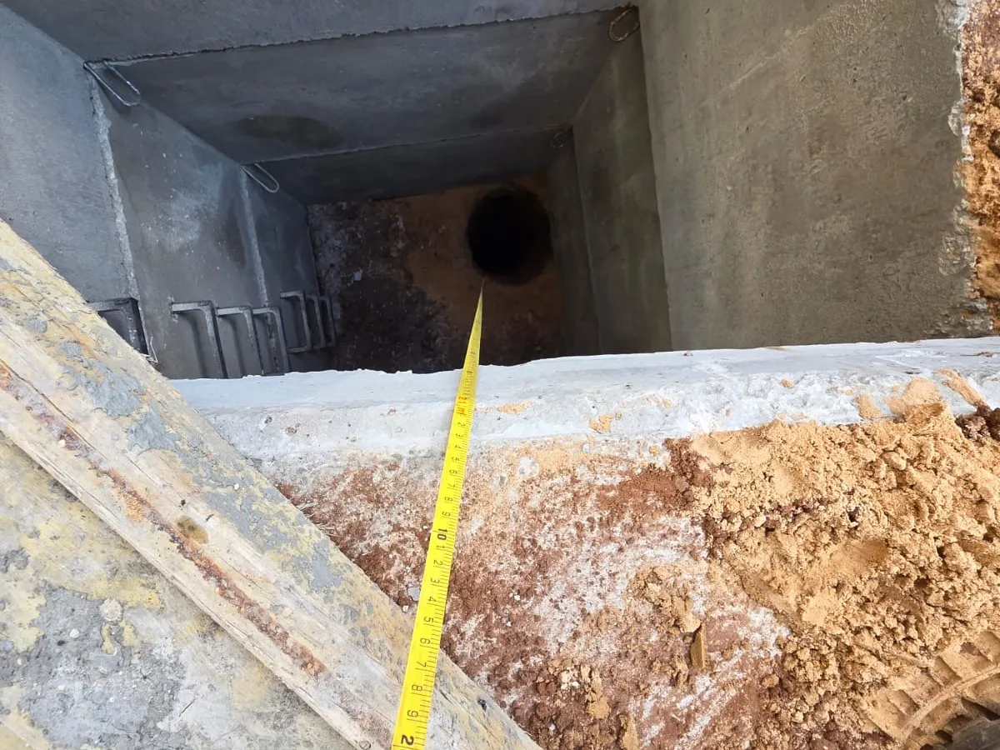

צריכים בור חלחול בחצר או בגינה? אנחנו מבצעים את כל התהליך — קידוח, צינור מחורר, פינוי וסגירת השטח — עם ציוד קטן שנכנס דרך שער רגיל, בלי לפגוע בריצוף. קבלן רשום 36281 · דירוג 5.0 ★ ב-Google.
בבית פרטי, כשהחצר מרוצפת או מבוטנת, למי הגשם אין לאן לחלחל — הם מצטברים, גורמים להצפות, רטיבות במרתף ונזק ליסודות. בור חלחול מחזיר את המים אל הקרקע בצורה מבוקרת. בפרויקטים חדשים רבים נדרש פתרון ניקוז מאושר בהתאם להיתר הבנייה ולתוכנית הניקוז — ובבית פרטי, בור ספיגה הוא הפתרון הנפוץ, היעיל והחסכוני ביותר.




טווחי מחיר מקובלים 2026 — התלויים בקוטר, עומק, תנאי קרקע ותנאי גישה
| סוג הבור | קוטר / עומק | טווח מחיר |
|---|---|---|
| בור ספיגה סטנדרטי | קוטר 1 מ׳ / עומק 4–6 מ׳ | 5,000₪ – 8,000₪ |
| בור חלחול עם טבעות בטון | קוטר 1 מ׳ / עומק 4–6 מ׳ | 7,000₪ – 12,000₪ |
| בור חלחול עמוק | קוטר 1 מ׳ / עומק 6–10 מ׳ | 8,000₪ – 15,000₪ |
שימו לב: המחירים כוללים קידוח, צינור מחורר, פינוי וסגירת השטח, והם טווחים מקובלים שמשתנים לפי תנאי הקרקע ותנאי הגישה. מילוי חצץ אפשרי בתוספת תשלום, לפי דרישה. למחירון המלא ראו מדריך המחירים לבור חלחול 2026. לקבלת הצעה מדויקת — שלחו לנו תמונה של הגישה לחצר ואת העומק והקוטר מתוך התוכנית.
בור חלחול לבית פרטי עולה בדרך כלל בין 5,000₪ ל-15,000₪, בהתאם לקוטר, לעומק, לתנאי הקרקע ולתנאי הגישה לחצר. בור ספיגה סטנדרטי בקוטר מטר ובעומק 4–6 מטר נמצא בטווח 5,000₪–8,000₪, ובור עמוק יותר או עם טבעות בטון עולה יותר. המחיר כולל קידוח, צינור מחורר, פינוי הפסולת וסגירת השטח. מילוי חצץ אפשרי בתוספת תשלום, לפי דרישה. לקבלת מחיר מדויק מומלץ לשלוח תמונה של הגישה לחצר ואת העומק והקוטר מתוך תוכנית הניקוז.
כן. אנחנו מבצעים בורות חלחול בבתים פרטיים גם כשהגישה צרה — עם ציוד קטן שנכנס דרך שער סטנדרטי. לפני העבודה בודקים את רוחב הגישה ואת מסלול הכניסה של המכונה כדי לוודא שאין פגיעה בריצוף, בגינה או בקירות. במקרים של גישה מאוד מוגבלת אפשר לבצע גם קידוח בשיטות המתאימות לשטח קטן.
אנחנו עובדים כך שהפגיעה בשטח תהיה מינימלית. מתכננים מראש את מסלול הכניסה של הציוד, מגנים על אזורים רגישים, ובסיום העבודה מפנים את החומר וסוגרים את השטח. במקרים שבהם צריך לפרק אריח כדי להגיע לנקודת הקידוח, מתאמים זאת מראש עם בעל הבית.
הצעת המחיר כוללת ביצוע מלא: קידוח הבור בקוטר ובעומק הנדרשים, אספקה והתקנה של צינור מחורר, פינוי החומר והפסולת לאתר מורשה, וסגירת השטח. מילוי חצץ אפשרי בתוספת תשלום, לפי דרישה. במידת הצורך מבצעים לפי תוכנית של יועץ הניקוז או יועץ הקרקע. הביצוע בבית פרטי נמשך בדרך כלל יום עבודה אחד עד שניים. אחריות על העבודה ומועד ביצוע מסוכמים מראש.
השאירו פרטים ונחזור אליכם בהקדם. מוזמנים לצרף גם תמונה של החצר בוואטסאפ להצעה מדויקת.